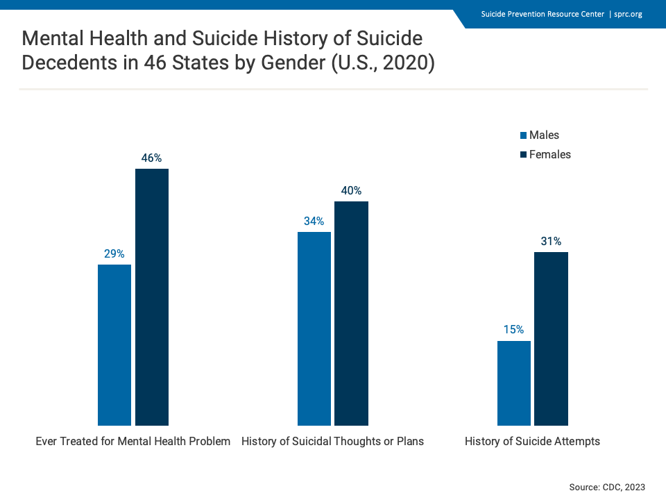
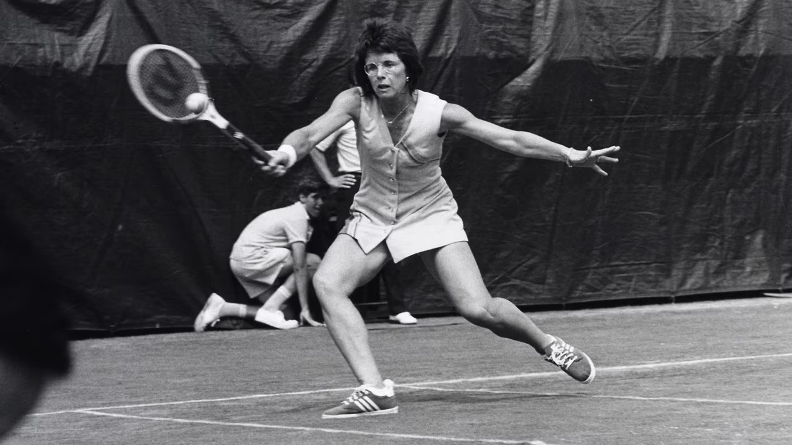

According to Robin N. Hamilton, an Emmy-award-winning television host and founder of the ‘ARound Robin Company’, gender equality is the idea that everyone, regardless of gender, has equal access to resources and opportunities; these opportunities include access to education, economic participation, and independence, and political participation and representation. However, as a society, we still have faults when it comes to complete gender equality. These inequalities can be traced back to as early as the Neolithic or Copper Age excavations, displayed by the differences in graves; not only were male graves more prominent, but they contained more “valuable” possessions, such as weapons 1. These burial differences among other factors indicated that gender differences arose from cultural practices rather than biological factors. Thus, this shows that gender inequality is deeply rooted in human culture, having less to do with societal stereotypes (claimed to have a basis in science) and more with cultural values and customs. These same gender ‘biases’ can be seen in the psychological situation of today, concerning the disparities in the diagnoses of certain psychiatric conditions based on gender stereotypes and lack of regard for female and male presentation of certain disorders. These psychiatric conditions include but are not limited to, attention-deficit/hyperactive disorder (ADHD), autism spectrum disorder, and conditions under the umbrella of depression.
Context Behind These Conditions
Dr. Kristalyn Salters-Pedneault, a clinical psychologist and associate professor at Eastern Connecticut State University, describes a psychiatric disorder as a “mental illness diagnosed by a mental health professional that greatly disturbs your thinking, moods, and/or behavior and seriously increases your risk of disability, pain, death, or loss of freedom.”2 Symptoms of psychiatric disorders include confused thinking, inability to manage day-to-day stress, and trouble understanding situations and other people, in addition to a plethora of other traits. Many categories fall under the umbrella of psychiatric disorders including neurodevelopmental disorders and depressive disorders 2. Despite these debilitating symptoms, though, there is still a gap in diagnoses of certain conditions present in relevance to gender.
According to the Children and Environment sector of the Environmental Protection Agency, “Neurodevelopmental disorders are disabilities associated primarily with the functioning of the neurological system and brain”.3 The two main neurodevelopmental disorders that present a major gender disparity are ADHD and autism.
Regarding ADHD, there are three major types: hyperactive/impulsive, inattentive, and combination.4 The hyperactive/impulsive type displays symptoms of hyperactivity but not necessarily inattention. The inattentive type is exactly the opposite of the former, manifesting as inattention but not hyperactivity. This form of ADHD was formerly called attention-deficit disorder (ADD), but this term has recently been deemed outdated. The last type, combination, involves symptoms of both inattention and hyperactivity. Before we begin to observe gender in this stratosphere, it is important to note that any individual can have any of the three forms of ADHD, regardless of gender.4
The Gender Gap: ADHD
cottonbro studios via Pexels
The diagnosis gap between boys and girls ages 5 to 17 from 1997 to 2021 is wide, with the percent difference between the two genders being at least 5%.3 A major reason why male ADHD is more ‘prevalent’ is because ADHD was initially defined based on hyperactive males. This is significant because of the way females typically present ADHD; they are more likely to present as inattentive. This inattention manifests in a variety of ways that can easily be ignored. These manifestations include disorganization, excessive tardiness, hypersexuality, repetitive behaviors that focus on the body – skin picking, leg bouncing, nail-biting– and perfectionism.4 On the other hand, male manifestations are demonstrated outwardly in the form of disruptive, aggressive, or high-risk behaviors. This contrasting exhibition of ADHD is why men tend to be diagnosed more often than women.
There are various repercussions to this diagnosis discrepancy. Namely, a lack of diagnosis in childhood can lead to greater struggles in adulthood. The lack of development of proper coping skills due to ignorance of needs in adolescence will manifest as dysfunction and disorganization later in life.4
The Gender Gap: Autism
Autism is another condition that presents some of the same challenges as the aforementioned disorder, ADHD. The National Institute of Mental Health describes Autism as “a neurological and developmental disorder that affects how people interact with others, communicate, learn, and behave.”5 Autism is a spectrum condition, meaning that individuals share some of the same traits but they are highly idiosyncratic in their needs, interests, and preferences 6. Autism is diagnosed 3 to 4 times more often in males compared to females and it typically takes 1.8 more years, on average, for females to receive a diagnosis after concerns are first raised by adults in their lives, such as parents or teachers 6.
Various theories may explain why this gender gap exists. For one, autistic girls present symptoms differently than the “typical” way we as a society tend to think about autism 6. This stereotypical thought process is the main culprit as to why female autism often gets overlooked. For instance, autistic children often have very intense fixations, and males are typically interested in things such as trains or buses 6. However, autistic girls also have very intense interests but their interests are often similar to girls their age, which may overshadow the severe intensity of the fixation and can be written off as “girls being girls”. Additionally, due to social expectations, girls often mask their autism to not cause a disruption and to attempt to fit into the societal perception of females being more shy 67. This perception of females is also why autistic girls are diagnosed with much higher levels of mental health problems such as depression or personality disorders 6. In some cases, healthcare providers have dismissed female autistic traits as the aforementioned conditions, on account of gender bias or blatant ignorance 7.
A continuing pattern of a lack of regard for the female presentation of a diagnosis is ever present in the case of ASD. According to Brickhill, “gender bias has likely filtered into academic research . . ., as the current diagnostic tools for autism are believed to be geared towards the male autism phenotype.”7 As a society, if we begin to look at certain conditions through an unbiased lens, we can begin to remedy the turmoil our lack of regard has caused. In a survey by Dr. Laura Hull of University of Bristol, 85% of autistic women said their lives were easier and better since getting a diagnosis.6 Our ability to improve the lives of those affected by these conditions should drive us to be more attentive to all individuals.
The Gender Gap: Depression
Mental Health and Suicide History of Suicide Decedents in 46 States by Gender; data from the CDC, data compiled by the SPRC
While it may appear that research only focuses on the lack of regard for female presentations of certain conditions, there is an unignorable neglect of the male presentation of a certain condition: depression. According to the Anxiety & Depression Association of America, “nearly 1 in 10 men experience depression or anxiety but less than half will receive treatment, and more than 4 times as many men as women die by suicide every year.”9 While it is important to note that there is no direct ratio between suicide and depression, the link demonstrates that “depression is one of suicides’ most significant risk factors.” 8 Males' symptoms of depression are often vastly different from that of females. They may exhibit escapist, risky, or controlling behaviors.9 These behaviors are often not seen as problematic due to society's perceived ideals of men. It is also important to recognize that, “[a]lthough women attempt suicide more often than men do, men are more likely to complete suicide”, because of their lack of expression of warning signs and their impulsivity to act on suicidal thoughts.9
The diagnosis disparity demonstrated by male depression rates reeks of a very similar substance to the aforementioned data on female ADHD and Autism. The main factor that prevents society from recognizing males and struggles is the perceived idea of masculinity. Traditional Western ideals of masculinity established the standards of self-reliance and emotional control. Society has further reinforced these ideals by teaching boys to express their emotions dissimilarly to that of female expression.8 This is even true in the medical setting as “[p]articipants in studies conducted before major depressive disorder (MDD) was included in the Diagnostic and Statistical Manual of Mental Disorders in 1980 were predominantly female.”8 When studies began to account for “male-typical” depressive symptoms such as substance misuse, aggression, and overworking, “the difference in rates of depression between the sexes disappeared.”8 As we work towards acknowledging the feelings of males through a non-stereotypical lens, we will begin to foster an environment that makes speaking out and seeking help less of a daunting task.
What Is To Be Done?
Billie Jean King playing at the 1970 US Open in Forest Hills. Photo owned by Ed Fernberger Collection of the International Tennis Hall of Fame.
“Girls are taught to be perfect, boys are taught to be brave,” said Presidential Medal of freedom recipient and Grand Slam Title holder Billie Jean King.10 This quote remains painfully true when we take a look at society's treatment of mental health conditions in relevance to gender. Jean King founded various organizations –such as the Women's Tennis Association– thus becoming a crucial activist in the fight for gender equality in the realm of professional tennis. However, this fight for equal opportunity is still ever present in our society, namely in the circumstance of clinical psychology.
The information presented leaves one substantial question: What can we do to remedy the issues caused by a long-standing irresponsibility regarding gender in the landscape of clinical psychology? The answer is equity. Equity focuses on uplifting people based on their varying material conditions and adjusting for those imbalances to provide equal opportunity. Providing gender equity in a long-established pattern of disproportionate awareness of psychological presentation — based on gender — of mental health conditions is the first step to remedying the imbalance presented in today’s psychological situation.
Further Reading
1 Hamilton, Robin N. “The Origin, History and Importance of Gender (In) Equality.” ARound Robin Production Company, August 8, 2023. aroundrobin.com/importance-of-gender-equality.
2 Salters-Pedneault, Kristalyn. “Types of Psychiatric Disorders.” Verywell Mind, August 22, 2023. verywellmind.com/psychiatric-disorder-definition-425317.
3 United States Environmental Protection Agency. “Health - Neurodevelopmental Disorders.” EPA.gov, May 29, 2015. epa.gov/americaschildrenenvironment/health-neurodevelopmental-disorders.
4 The ADHD Centre. “Female vs Male ADHD.” The ADHD Centre, December 21, 2022. adhdcentre.co.uk/female-vs-male-adhd/#.
5 National Institute of Mental Health. “Autism Spectrum Disorder.” National Institute of Mental Health, 2024. nimh.nih.gov/health/topics/autism-spectrum-disorders-asd.
6 Hull, Laura. “The Gender Gap in Autism.” Ambitious about Autism, March 31, 2023. ambitiousaboutautism.org.uk/about-us/media-centre/blog/girls-and-autism/gender-gap-autism.
7 Brickhill, Rae, Gray Atherton, Andrea Piovesan, and Liam Cross. “Autism, Thy Name Is Man: Exploring Implicit and Explicit Gender Bias in Autism Perceptions.” PLOS ONE 18, no. 8 (August 23, 2023): e0284013–13. doi.org/10.1371/journal.pone.0284013.
8 Swetlitz, Nathan. “Depression’s Problem with Men.” AMA Journal of Ethics 23, no. 7 (July 1, 2021): E586-589. doi.org/10.1001/amajethics.2021.586.
9 Anxiety & Depression Association of America. “Men’s Mental Health.” adaa.org, January 5, 2023. adaa.org/find-help/by-demographics/mens-mental-health.
10 Billie Jean King Enterprises. “Women’s Equal Rights in Sports.” Billie Jean King Enterprises, 2014. billiejeanking.com/equality/.